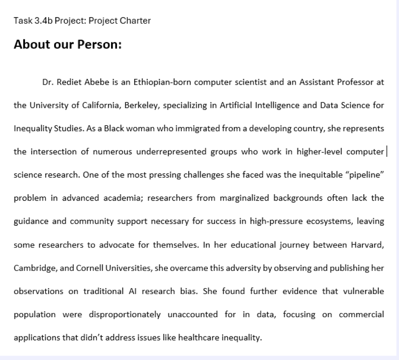
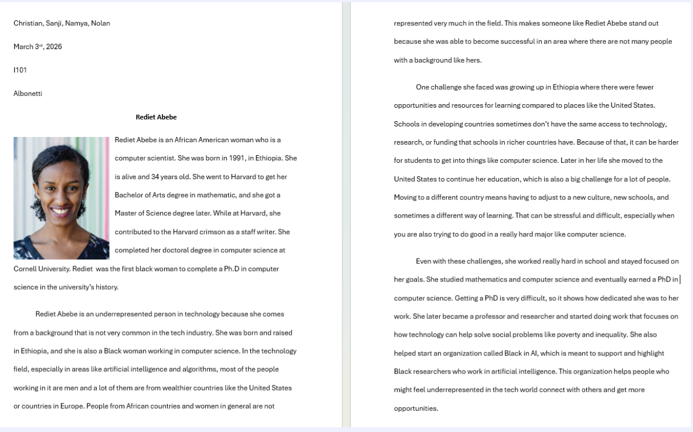
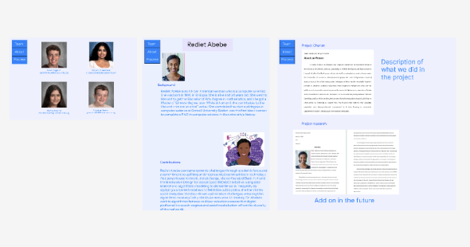
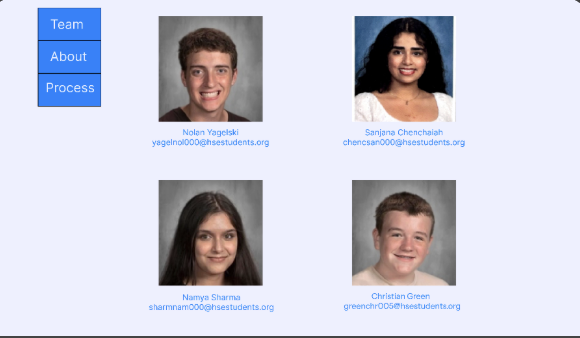
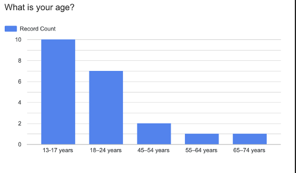
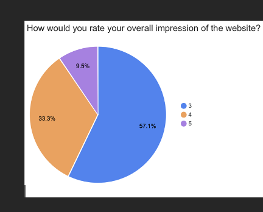
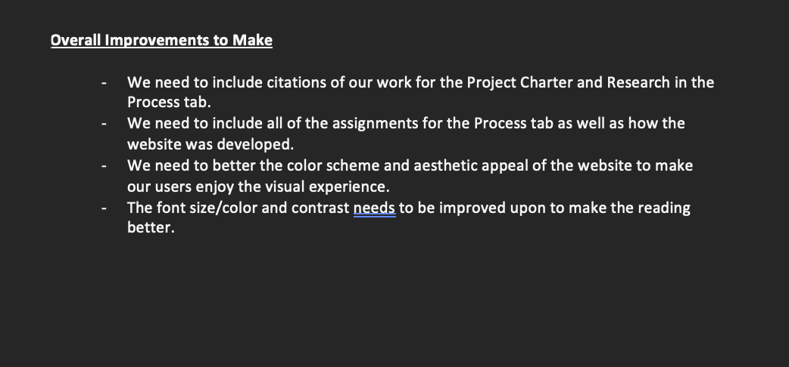
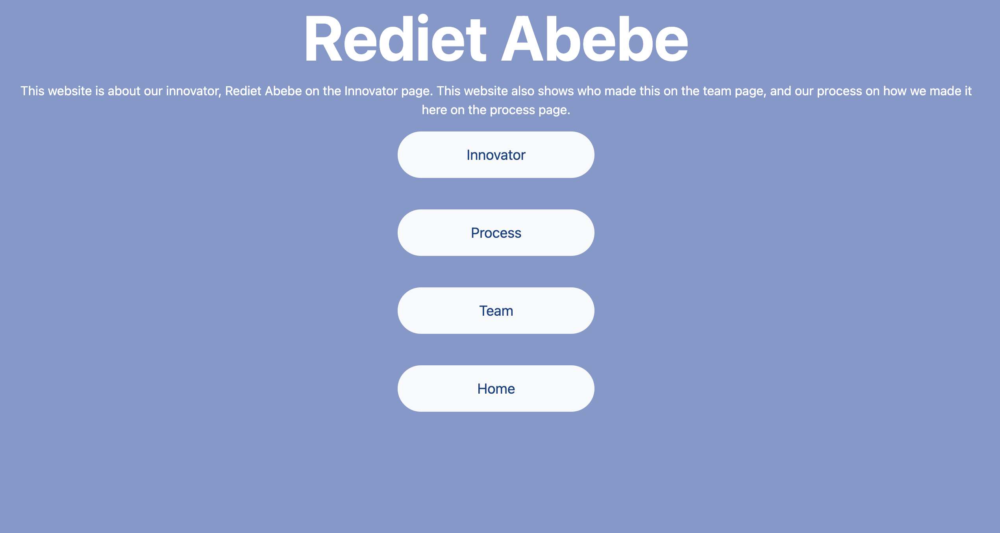

This assignment contained the outline for the timeline of our project and how Dr. Rediet Abebe's work was going to be fit into our observation and learning about her and the concept of underrepresented innovators. We described Dr. Abebe's life work as well as how we planned to distribute responsibilites and keep track of work.

This assignment involved learning and researching about different aspects of Dr. Abebe's life, including how she grew up, her education, her accomplishments, her influence on technology, why she is considered an underrepresented innovator, and the hardships she faced on this path.

This assignment involved creating a mock-up of our website using the prototyping tool called Figma. This tool helped us figure out the navigation and details for our final website. This was utilized in our final website (this website) to display the concept of what each page should contain, what the set-up should look like, and how navigation was going to work between pages.

This assignment utilized our Figma Wireframe to create a rough draft of our website that is used to gather feedback to create a final draft. This draft was completed using basic code to get the concepts of navigation and structure worked out.

This assignment involved using our rough draft wesbite on Github to gather constructive feedback to fix our website interface, information, and naviagtion. These are all vital components in UI/UX and HCI that are needed to compose a viable and professional website. This feedback included interviews and a survey about the clarity of our website. We collected data and feedback to change our website for the better.
This assignment involved using our feedback and data to create visualizations of the said data with charts and tables. This helps us understand people's impressions and thoughts about our website over raw information. We made a pie chart of people's impression and a bar chart of our age demographics. We additionally utilized written comments to add more to our project.



This assignment involves the full product and dissemination of information over Dr. Rediet Abebe's life work and how were able to interpret it. It also includes the team who made the website and the steps required to get there.

Layout by Bootstrap